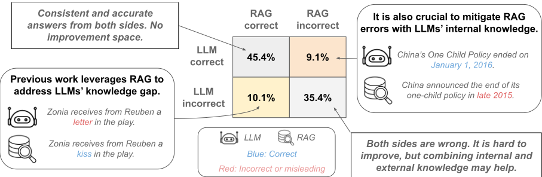
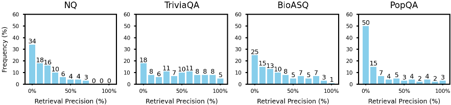
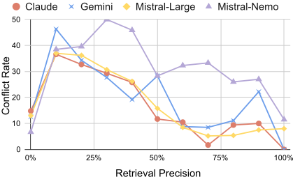
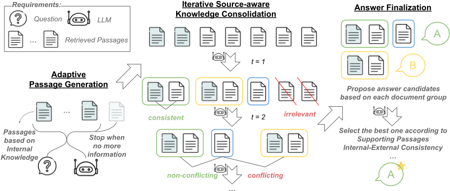
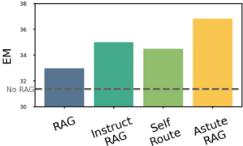
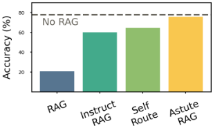
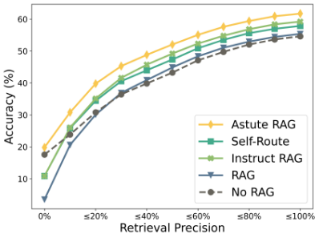
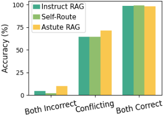
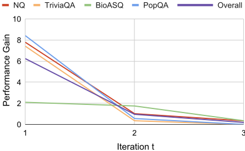
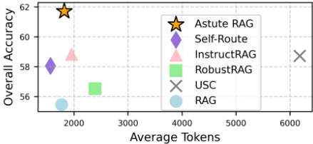

Astute RAG：克服不完美检索增强与大型语言模型中的知识冲突
论文研究 RAG 中检索结果不完美（无关、误导甚至恶意内容）以及外部检索知识与 LLM 内部参数化知识相冲突的问题。作者基于 Google Search 真实检索结果做受控分析，发现约 70% 的检索段落不直接包含正确答案、19.2% 的样本出现知识冲突，且冲突时内部与外部知识各自正确的比例接近（47.4% vs 52.6%），说明必须有效融合两类知识。据此提出 ASTUTE RAG：先用带 constitutional principles 的提示自适应生成 LLM 内部知识段落，再迭代进行带来源标注的知识整合（合并一致信息、识别冲突、过滤无关内容），最后按可靠性比较各组候选答案并择优输出。在 Claude、Gemini、Mistral 上的实验显示，其相对最优基线整体准确率提升 6.85%（Claude）与 4.13%（Gemini），是唯一在最坏情况（全部负例段落）下接近 No RAG 性能的 RAG 方法，额外 token 成本低于 5%。
RAG 依赖的检索结果可能包含无关、误导甚至恶意信息（imperfect retrieval），且检索到的外部知识可能与 LLM 参数化知识发生知识冲突，导致回答不可靠。先前工作缺乏对两个真实世界问题的定量分析：(i) 检索质量与知识冲突发生率的关系，(ii) 检索段落与 LLM 内部知识互相纠正的程度；方法上也缺少 training-free、面向黑盒 LLM、能显式分析并消解内外部知识冲突的后检索阶段方案。
ASTUTE RAG 是 training-free、仅需黑盒 API 访问的后检索阶段方法，分三步：(1) 自适应内部知识生成：用带 constitutional principles 的提示 p_gen 让 LLM 基于问题生成至多 m̂ 个准确、相关、无幻觉的内部段落，LLM 可自行决定生成数量甚至不生成；(2) 迭代 source-aware 知识整合：将内部与外部段落合并并标注来源（own memory / external retrieval），用提示 p_con 识别跨段落一致信息、检测冲突信息、过滤无关信息，将不可靠知识重组为更少的精炼段落，可迭代 t 次；(3) 答案定稿：用提示 p_ans 对每组整合后段落生成答案并赋置信度，综合知识来源、跨源确认、频率与信息完整性选出最可靠的最终答案。该步可并入最后一次整合以减少 API 调用。
真实 Google Search 检索下，约 70% 的检索段落不直接包含正确答案；Claude 3.5 Sonnet 上 19.2% 的样本出现知识冲突
冲突案例中，LLM 内部知识正确占 47.4%，外部知识正确占 52.6%
相对最优基线的整体准确率提升：Claude 6.85%、Gemini 4.13%，领域特定问题提升更高；在开源 Mistral-Large/Mistral-Nemo 上也有一致提升
RGB 最坏情况（检索段落全为负例）下，RAG 与 No RAG 性能差距超过 50 分，ASTUTE RAG 是唯一接近 No RAG 性能的 RAG 方法
在知识冲突子集上约 80% 的情况选出正确答案，且在内外部知识单独都无法答对的子集上也能带来提升
相比 RAG 基线，token 消耗仅增加 <5%，性能提升 >11%
中间步骤准确率（LLM-as-a-judge）：知识整合 98.2%，置信度赋值 95.0%
消融：移除来源标注（No Source）在 NQ、PopQA、BioASQ 上性能下降；上下文过滤与上下文压缩（CompAct）基线均不及 ASTUTE RAG；多次整合迭代（t>1）有收益但边际递减
与改进检索器、噪声数据训练、段落重排、自适应切换 RAG/No RAG 等先前路线不同，ASTUTE RAG 聚焦后检索阶段：training-free、适用于黑盒 LLM，在上下文中显式引入 LLM 内部生成段落，与检索段落做来源感知的迭代整合与可靠性仲裁，从而在检索大面积失效时仍能恢复。同时填补了先前缺乏的定量分析：在真实检索条件下系统量化了检索精度、知识冲突率与 RAG 失败之间的关系（如冲突时内外部知识正确率接近 47.4%/52.6%），并证明仅靠自我修正（Answer Refinement）或上下文压缩不足以应对知识冲突。
相关度级别：high
命中能力域：3.1 上下文工程与记忆 | 3.2 提示工程 | 3.5 评测与可靠使用
理由：团队核心场景之一是知识库问答等 RAG 应用，本文直接命中 3.1 域的 RAG/检索增强与生产系统上下文管理：给出后检索阶段的上下文组织方案（内部知识生成 + 来源感知整合 + 可靠性仲裁）。其三个提示模板（p_gen/p_con/p_ans）与 constitutional principles 的用法属于 3.2 提示工程可直接借鉴的资产。其对检索精度分桶评测、最坏情况鲁棒性、token 成本与 API 调用开销的量化方法属于 3.5 评测与可靠使用，可直接纳入团队 RAG 系统的评测与可靠性保障流程。
建议动作：深入精读并做内部分享
arXiv:2410.07176v2 [cs.CL] 2025年5月31日
Astute RAG：克服大语言模型中不完美的检索增强与知识冲突
Fei Wang 12 ∗ Xingchen Wan 1 Ruoxi Sun 1 Jiefeng Chen 1 Sercan Ö. Arık 1
1 谷歌云 AI 研究（Google Cloud AI Research） 2 南加州大学（University of Southern California）
fwang598@usc.edu {xingchenw,ruoxis,jiefengc,soarik}@google.com
检索增强生成（RAG）虽然能够有效整合外部知识以增强大语言模型（LLMs），但可能因不完美的检索而受损，因为不完美的检索可能引入无关、误导性甚至恶意的信息。尽管这一问题十分重要，以往的研究却很少探讨 RAG 在不完美检索所引入错误下的行为表现，以及 LLMs 内部知识与外部来源之间潜在冲突是如何产生的。我们通过在现实条件下的受控分析表明，不完美的检索增强可能是不可避免的，而且危害相当大。LLM 内部知识与检索所得外部知识之间的知识冲突，是 RAG 检索后阶段需要克服的瓶颈。为了使 LLMs 对不完美检索具备韧性，我们提出了 ASTUTE RAG，这是一种新颖的 RAG 方法，它自适应地从 LLMs 的内部知识中引出关键信息，以来源感知的方式迭代地整合内部与外部知识，并根据信息的可靠性最终确定答案。我们在 Gemini 和 Claude 上开展的实验表明，ASTUTE RAG 显著优于以往增强鲁棒性的 RAG 方法。值得注意的是，ASTUTE RAG 是唯一一种在最坏情况下能够达到甚至超过不使用 RAG 的 LLMs 性能的方法。ASTUTE RAG 有效化解了知识冲突，提升了 RAG 系统的可靠性与可信度。
检索增强生成（Retrieval-Augmented Generation, RAG）通常被用于大语言模型（Large Language Models, LLMs）以应对知识密集型任务（Guu et al., 2020; Lewis et al., 2020）。先前的工作主要利用 RAG 来解决 LLMs 固有的知识局限性，有效地整合缺失信息并锚定至可靠来源。
* 本工作完成于 Google 实习期间。
然而，近期研究指出了一个显著缺陷：RAG 可能依赖于不完美的检索，包括不相关、误导性甚至恶意的信息（图 1），最终导致 LLMs 给出不准确的回答（Chen et al., 2024a; Zou et al., 2024）。此外，近期研究表明，当检索到的段落与 LLMs 的参数化知识相冲突时，检索增强可能会使 LLMs 产生混淆（Tan et al., 2024; Xie et al., 2024; Jin et al., 2024）。这些给 RAG 的可信度带来了重大挑战。
为了应对不完美的检索，早期工作致力于改进检索方法，例如动态检索与迭代检索（Jiang et al., 2023; Asai et al., 2023; Yan et al., 2024）。然而，由于语料库质量的限制（Shao et al., 2024）、检索器的可靠性问题（Dai et al., 2024）以及查询的复杂性（Su et al., 2024），不完美检索的出现仍然不可避免。因此，近期工作将重点转向生成阶段，力求降低含噪检索段落的负面影响（Xiang et al., 2024; Wei et al., 2024）。生成阶段的另一条研究路线受知识冲突的启发，探索用 LLM 生成的段落来补充检索段落（Yu et al., 2023a; Zhang et al., 2023），或在检索段落质量不足时停用 RAG（Xu et al., 2024; Mallen et al., 2023; Jeong et al., 2024）。
尽管已有工作研究了 RAG 生成阶段不完美检索与知识冲突的影响，但在两个至关重要的现实方面仍缺乏定量分析：（i）检索质量与知识冲突发生之间的关系，以及（ii）检索段落与 LLMs 的参数化知识能在多大程度上相互纠正。在方法层面，现有的用于缓解由不完美检索和知识冲突导致的 RAG 失效的方法，尚未产生一种免训练的方法，能够显式分析来自各种内部与外部来源的冲突知识，并为黑盒 LLMs 实现最坏情况下的鲁棒性。

检索增强生成（RAG）旨在利用从私有语料库或公共知识库等外部信息源中检索到的文段，来应对大语言模型（LLM）固有的知识局限 (Guu et al., 2020; Lewis et al., 2020; Borgeaud et al., 2022)。鉴于

■

RAG 在包括风险敏感领域在内的现实世界中的广泛采用，检索文段中噪声信息的负面影响已受到越来越多的关注 (Cuconasu et al., 2024)。近期工作从多个角度探索了增强 RAG 系统对噪声的鲁棒性，包括使用含噪上下文训练 LLM (Yu et al., 2023b; Yoran et al.,
To better showcase common real-world challenges and motivate improved methodological designs, we evaluate retrieval quality, the occurrence of knowledge conflicts, their relationship, and the mutual correction between external and internal knowledge using a controlled dataset derived from NQ, TriviaQA, BioASQ, and PopQA, datasets widely used for RAG in prior work (Xiang et al., 2024; Wei et al., 2024; Asai et al., 2023). Different from prior work, our analysis is based on real-world retrieval results with Google Search 2 as the retriever and the Web as the corpus. Overall, we sample 1K instances, each with 10 retrieved passages.
Imperfect retrieval and knowledge conflicts are common and harmful. Our initial observations
2 https://developers.google.com/custom-search/ v1/overview

are consist with prior work. As shown in Fig. 2, the retrieval precision 3 is generally low - roughly 70% retrieved passages do not directly contain true answers, consistent with prior work demonstrating the often imperfect nature of retrieval results (Thakur et al., 2024; Su et al., 2024). With Claude 3.5 Sonnet as the LLM, Fig. 1 shows that 19.2% of the overall data exhibit knowledge conflicts, consistent with prior work demonstrating the prevalence of such conflicts across various scenarios (Pham et al., 2024; Xie et al., 2024; Longpre et al., 2021). Moreover, we observe strong correlations between retrieval precision and RAG performance (Fig. 7) and between the occurrence of knowledge conflicts and RAG performance (Fig. 8), findings consistent with prior work on these respective topics (Chen et al., 2024a; Xie et al., 2024).
Lower retrieval precision increases knowledge conflicts in general. As shown in Fig. 3, most advanced LLMs exhibit the highest conflict rates when retrieval precision is as low as 10%. Subsequently, the conflict rate generally decreases as precision increases, although some fluctuations may occur. This trend is generally applicable to the studied LLMs with different training processes. Notably, when retrieval precision is 0%, conflict rates tend to be significantly lower. This suggests that limited external knowledge for the query results in more irrelevant passages rather than incorrect ones.
Internal and external knowledge can correct each other to a comparable extent. Among the conflicting cases, the internal knowledge is correct on 47.4% of them, while the external knowledge is correct on the remaining 52.6%. These results emphasize the importance of effectively combining the internal and external knowledge to overcome the inherent limitation of relying solely on either source. However, previous work (Tan et al., 2024; Xie et al., 2024; Jin et al., 2024) shows that LLMs often select knowledge based on unreliable shortcuts, so simply presenting LLM-generated passages in the context may not help.
3 Ratio of passages directly contain true answers.
我们首先对 ASTUTE RAG 进行概述（第 4.1 节）。随后，我们深入探讨 ASTUTE RAG 的三个主要步骤，包括内部知识的自适应生成（第 4.2 节）、来源感知的知识整合（第 4.3 节）以及答案最终确定（第 4.4 节）。
我们的目标是缓解不完美检索增强所带来的影响，化解大语言模型（LLM）内部知识与外部来源（例如自定义/公共语料库和知识库）之间的知识冲突，并最终使 LLM 生成更加准确、可靠的响应。给定从外部来源检索到的一组段落 E = [ e 1 , . . . , e n ]、一个预训练 LLM M（仅可通过预测类 API 访问，其中包括商用黑盒 API），以及一个查询 q，任务是生成相应的正确答
在第一步中，我们从大语言模型（LLM）中引出内部知识。这种 LLM 内部知识反映了海量预训练数据与指令微调数据所形成的共识，能够补充有限检索段落集合中缺失的信息，并使 LLM 内部知识与外部知识之间能够相互印证。当大多数检索段落可能不相关或具有误导性时，这一点尤为宝贵。具体而言，我们遵循 Yu et al. (2023a) 的做法，提示 LLM 基于给定的问题 q 生成段落。虽然 Yu et al. (2023a) 主要关注生成多样化的内部段落，但我们强调所生成段落的可靠性与可信度的重要性。为实现这一目标，我们利用宪法原则（constitutional principles）和自适应生成对原始方法进行了增强。
受 Bai et al. (2022) 启发，我们在提示 p gen 中提供宪法原则，用以说明内部段落应具备的期望属性（详见附录 A），以指导段落的生成，并强调所生成的段落应当准确、相关且无幻觉。此外，我们允许 LLM 对其内部知识中的段落进行自适应生成。LLM 可以自行决定生成多少个段落。我们并不要求 LLM 生成固定数量的段落，而是要求其生成至多 ˆ m 个段落，每个段落涵盖不同的信息，并在没有更多可靠信息可用时直接予以指明。这种自适应方式使 LLM 在内部知识中有用信息有限时生成较少的段落（甚至完全不生成段落），而在内部知识中存在多个可行答案时生成较多的段落。在此步骤中，LLM 基于其内部知识生成 m ≤ ˆ m 个段落：
在第二步中，我们利用 LLM 显式地整合两类信息：由其内部知识生成的段落，以及从外部来源检索到的段落。首先，我们将来自内部与外部知识来源的段落合并，得到 D 0 = E ⊕ I。
此外，我们在整合知识时向 LLM 提供每个段落的来源，从而确保来源感知。来源信息（内部或外部，例如某个网站）有助于评估段落的可靠性。此处，我们将段落来源提供为 S 0 = [ ✶ { d ∈ E } for d in D 0 ] 。为了整合知识，我们提示 LLM（使用附录 A 中的 p con）识别各段落之间一致的信息，检测每组一致段落之间的冲突信息，并过滤掉无关信息。该步骤会将输入段落中不可靠的知识重新组织为数量更少、更为精炼的段落。重新组织后的段落还会将其来源归因于相应的输入段落：
我们发现，这一做法在比较冲突知识的可靠性以及解决知识冲突方面尤为有帮助。该知识整合过程可以迭代运行 t 次，以更好地利用检索到的上下文。
在最后一步，我们提示 LLM（使用附录 A 中的 p ans）基于每组段落（⟨ D t , S t ⟩）各生成一个答案，然后比较它们的可靠性，并选择最可靠的一个作为最终答案。这一比较使 LLM 在做出最终决策时能够综合考虑知识来源、跨来源确认、频率以及信息的详尽程度。值得注意的是，该步骤可以合并到最后一个知识整合步骤中，通过组合提示来降低推理复杂度（即预测 API 调用的数量）：
当 t = 1 时，初始段落将直接输入模型进行知识整合及后续回答：a = M ( p ans , q, ⟨ D 0 , S 0 ⟩ ) 。
我们评估了 ASTUTE RAG 在克服不完美检索增强与解决知识冲突方面的有效性。在本节中，我们介绍实验设置（第 5.1 节），在多样化数据集上将 ASTUTE RAG 与多种基线方法的性能进行比较（第 5.2 节），并进行深入分析（第 5.3 节）。
真实检索条件下的性能。表1展示了各种大语言模型（LLM）在真实检索增强下的结果。我们发现，检索到的段落并不总是能带来收益——在NQ和TriviaQA上，对于先进的LLM，检索增强生成（RAG）的性能落后于No RAG。我们将此归因于这些问题已被LLM的内部知识所覆盖，以及检索结果中的噪声对LLM造成了误导。相比之下，在专注于领域特定问题和“长尾”问题的BioASQ和PopQA上，RAG显著提升了LLM的性能。然而，由于检索增强的不完美性，绝对性能仍不尽如人意。在所有基线方法中，没有任何一种方法能在所有数据集和LLM上持续优于其他方法。这一观察表明，这些基线方法是针对不同设置定制的，并不具备普遍适用性。总体而言，InstructRAG和Self-Route在其他备选方法中表现出相对更优的性能。ASTUTE RAG在总体准确率上持续优于所有LLM上的各基线方法。与最佳基线相比，Claude的相对提升为6.85%，Gemini为4.13%，其中在领域特定问题上的提升要高得多。这些结果凸显了ASTUTE RAG在克服不完美检索增强和知识冲突方面的有效性。此外，我们观察到在开源的Mistral模型上也取得了一致的提升。这些结果表明，ASTUTE RAG能够很好地泛化到规模较小的LLM。
5 https://www.anthropic.com/news/claude-3-5-sonnet
6 https://deepmind.google/technologies/gemini/pro/
7 原始的Self-Route在RAG与长上下文LLM之间切换，而我们的实现根据我们的问题设定在RAG与No RAG之间切换。
| Method. | NQ.Claude 3.5 Sonnet (20240620) | TriviaQA.Claude 3.5 Sonnet (20240620) | BioASQ.Claude 3.5 Sonnet (20240620) | PopQA.Claude 3.5 Sonnet (20240620) | Overall.Claude 3.5 Sonnet (20240620) | NQ.Gemini 1.5 Pro (002) | TriviaQA.Gemini 1.5 Pro (002) | BioASQ.Gemini 1.5 Pro (002) | PopQA.Gemini 1.5 Pro (002) | Overall.Gemini 1.5 Pro (002) |
|---|---|---|---|---|---|---|---|---|---|---|
| No RAG RAG | 47.1 44.4 | 82.0 76.7 | 50.4 58.0 | 29.8 36.0 | 54.5 55.5 | 44.8 42.7 | 80.2 76.0 | 45.8 55.2 | 25.3 33.7 | 51.3 53.7 |
| USC (Chen et al., 2024b) | 48.1 | 80.2 | 61.5 | 37.6 | 58.7 | 46.4 | 76.7 | 58.4 | 37.6 | 56.4 |
| GenRead (Yu et al., 2023a) RobustRAG (Xiang et al., | 42.0 | 74.2 | 57.0 | 34.3 | 53.6 | 45.1 | 77.4 | 54.9 | 34.3 | 54.7 |
| 2024) | 47.8 | 78.1 | 56.3 | 37.1 | 56.5 | 34.2 | 67.5 | 44.1 | 32.0 | 45.6 4 |
| InstructRAG (Wei et al., 2024) | 47.1 | 83.0 | 58.0 | 41.0 | 58.8 | 46.8 | 80.6 | 54.9 | 34.8 | 56.1 |
| Self-Route (Xu et al., 2024) | 47.5 | 78.8 | 59.1 | 41.0 | 58.1 | 47.5 | 79.9 | 58.0 | 38.2 | 57.6 |
| ASTUTE RAG | 52.2 | 84.1 | 60.1 | 44.4 | 61.7 | 50.2 | 81.6 | 58.0 | 40.5 | 59.2 |
| Mistral-Large (2407), 128B | Mistral-Large (2407), 128B | Mistral-Large (2407), 128B | Mistral-Large (2407), 128B | Mistral-Large (2407), 128B | Mistral-Nemo (2407), 12B | Mistral-Nemo (2407), 12B | Mistral-Nemo (2407), 12B | Mistral-Nemo (2407), 12B | Mistral-Nemo (2407), 12B | |
| No RAG | 46.8 | 79.5 | 43.7 | 24.7 | 51.1 | 29.8 | 67.8 | 34.3 | 23.0 | 40.2 |
| RAG | 43.1 | 77.4 | 55.9 | 36.0 | 54.7 | 39.3 | 66.8 | 49.0 | 32.6 | 48.3 |
| USC (Chen et al., 2024b) | 51.2 | 80.9 | 61.5 | 36.0 | 59.5 | 29.5 | 66.1 | 36.0 | 20.2 | 39.6 |
| GenRead (Yu et al., 2023a) | 40.7 | 73.1 | 55.6 | 35.4 | 52.7 | 38.6 | 68.9 | 48.3 | 33.7 | 48.7 |
| RobustRAG (Xiang et al., 2024) | 42.7 | 77.7 | 50.4 | 34.8 | 53.0 | 35.6 | 71.7 | 44.1 | 27.5 | 46.4 |
| InstructRAG (Wei et al., 2024) | 45.4 | 80.6 | 57.3 | 36.5 | 56.7 | 38.3 | 61.8 | 50.4 | 23.6 | 45.5 |
| Self-Route (Xu et al., 2024) | 45.4 | 77.7 | 57.3 | 38.2 | 56.2 | 41.4 | 73.5 | 51.8 | 30.9 | 51.2 |
| ASTUTE RAG | 50.2 | 82.7 | 58.4 | 42.1 | 59.9 | 42.7 | 73.9 | 49.3 | 32.6 | 51.3 |
| Method. | NQ.Claude 3.5 Sonnet (20240620) | TriviaQA.Claude 3.5 Sonnet (20240620) | BioASQ.Claude 3.5 Sonnet (20240620) | PopQA.Claude 3.5 Sonnet (20240620) | Overall.Claude 3.5 Sonnet (20240620) | NQ.Gemini 1.5 Pro (002) | TriviaQA.Gemini 1.5 Pro (002) | BioASQ.Gemini 1.5 Pro (002) | PopQA.Gemini 1.5 Pro (002) | Overall.Gemini 1.5 Pro (002) |


长文本问答（QA）上的性能。我们在长文本问答数据集ASQA上进行了额外实验。图5表明，ASTUTE RAG持续取得显著提升，进一步印证了其在多种场景下的有效性。


RGB上的最坏情况性能。图6展示了RGB上最坏情况设定（即所有检索到的文档均为负面文档）下的结果，以验证鲁棒性。RAG与No RAG之间的性能差距超过50分，凸显了不完美检索结果的有害影响，并强调了针对最坏情况提供鲁棒防护措施的重要性。尽管各基线RAG方法优于原始RAG，但仍明显落后于"No RAG"。ASTUTE RAG是唯一一种性能接近"No RAG"的RAG方法，进一步支持了其在应对不完美检索增强方面的有效性。
我们按照表1的设定，使用 Claude 进行深入分析。
检索精度的影响。如图7所示，ASTUTE RAG 在不同的检索精度情形下均持续取得更优的性能，表明其在广泛场景中提升 RAG 可信度方面的有效性。值得注意的是，ASTUTE RAG 并未以牺牲高检索质量下的性能增益为代价，来换取低检索质量下的改进。当检索质量极低（精度接近零）时，除 ASTUTE RAG 外，所有其他 RAG 变体的表现均不及“No RAG”基线。
应对知识冲突。我们根据使用 RAG 与不使用 RAG 时的答案，将收集的数据划分为三个子集：两者的答案可以是 (i) 均正确，(ii) 均错误，或 (iii) 相互冲突且其中一方正确。两者均错误（Both Incorrect）的结果如图8所示。在冲突子集上，ASTUTE RAG 在约80%的情况下成功选择了正确答案，是应对知识冲突方面最有效的方法。值得注意的是，在仅靠内部知识或仅靠外部知识都无法得出正确答案的子集上，ASTUTE RAG 甚至带来了性能提升。这表明 ASTUTE RAG 能够有效结合来自大语言模型（LLM）内部知识与外部知识中部分正确的信息。
更多知识整合迭代的收益。出于效率考虑，我们在主实验中仅采用单次知识整合迭代。然而，如图9所示，引入多次迭代有进一步提升模型性能的潜力。随着 t 的增大，这一提升的幅度逐渐减小，表明知识在每次迭代后得到了更好的呈现，剩余的改进空间也更小。
Token 消耗与 API 调用的效率。作为整体预测成本与延迟的代理指标，我们在图10和图11中展示了每个实例平均使用的 token 数量与 API 调用次数。与 RAG 基线相比，ASTUTE RAG 仅带来轻微的成本增加（<5%），同时带来了显著的提升（>11%）。
自适应生成的有效性。表2中的结果展示了在改变生成段落最大数量时模型的性能。自适应生成的设计得到了有效体现，因为生成段落的数量被动态调整，从而使得 m < ˆ m。值得注意的是，生成段落的数量可以通过 ˆ m 来控制，且结果表明系统不会过度生成段落。

来源感知的影响。为评估来源感知的影响，我们开展了一项消融实验，在整合与答案生成过程中移除了来源标签（自身记忆与外部检索）。结果如表3所示。对比结果显示，提供来源信息（ASTUTE RAG）相比省略来源信息（ASTUTE RAG (No Source)）整体上能带来更好的性能，尤其是在NQ、PopQA和BioASQ上，这表明对信息来源的感知有助于整合过程。
中间步骤的准确性。为考察包括知识整合与置信度分配在内的中间步骤的性能，我们使用LLM-as-a-judge，其指令见附录A。实验结果表明，知识整合的准确率为98.2%，置信度分配的准确率为95.0%。这些结果证明了所提出框架在中间阶段的有效性。
定性示例。图12给出了两个代表性示例，展示了ASTUTE RAG的中间输出。在第一个示例中，不使用RAG的LLM生成了错误答案，而RAG返回了正确答案。ASTUTE RAG成功识别出其生成段落与一个外部段落中的错误信息，避免了确认偏误（Tan et al., 2024）。在第二个示例中，LLM正确而RAG因不完美检索而错误。ASTUTE RAG利用内部知识从不完美的上下文中检测出了正确答案。
我们研究了不完美检索对检索增强生成（RAG）系统性能的影响，并将知识冲突确定为一个关键挑战。为解决这一问题，我们提出了 ASTUTE RAG，这是一种新颖的方法，它利用大语言模型（LLM）的内部知识，通过以基于来源的方式整合内部与外部知识，迭代地优化生成的回答。我们证明了 ASTUTE RAG 在缓解不完美检索的负面影响以及提升 RAG 鲁棒性方面的有效性，尤其是在外部来源不可靠的挑战性场景中。

ASTUTE RAG's effectiveness hinges on the capabilities of advanced LLMs with strong instructionfollowing and reasoning abilities, hence potentially more limited applicability with less sophisticated LLMs. As an important future direction, extending the experimental setup to include longer inputs would be important, where the challenges of imperfect retrieval and knowledge conflicts may be even more pronounced.
生成一份能够提供准确且相关信息以回答给定问题的文档。如果信息不清晰或不确定，请明确说明“我不知道”，以避免产生任何幻觉。
任务：整合你自身记忆的文档与外部检索到的文档中的信息，以回答给定的问题。
新上下文：
任务：使用来自你自身记忆的文档与外部检索到的文档的整合信息，回答给定的问题。
步骤 1：整合信息
对于每组文档，提出一个可能的答案，并根据信息的可信度与一致性赋予相应的置信度分数。
步骤 3：选择最终答案
在评估完所有组之后，选择最准确且依据最充分的答案。将你的确切答案置于 < ANSWER > 你的答案 < /ANSWER > 之中以示突出。
答案：
**任务：** 你将获得以下内容：
你的任务是：
请注意，正确的整合与置信度并不一定意味着答案正确。
问题：{query}
在表 4 中，我们进一步将 ASTUTE RAG 与 Answer Refinement 进行比较，后者通过提示让 LLM 在重新审视外部上下文的基础上改进其初始答案。值得注意的是，该基线的表现与 Self-Route 几乎完全一致，这是符合预期的，因为两种方法都依赖模型自身来决定是否基于外部知识修改其初始答案。这一比较凸显出，仅仅让 LLM 具备自我纠错能力，并不能带来超越现有路由策略的显著改进。相比之下，ASTUTE RAG 在所有数据集上仍然优于所有基线，进一步印证了显式结构化整合机制的优势。
为了将识别无关信息的效果与整合过程分离开来，我们开展了一项消融研究，引入了两个 Context Filtering（上下文过滤）基线。第一个基线仅对检索到的文档进行过滤，而第二个基线则在答案生成之前对检索到的文档和生成的文档都进行过滤，两者均不应用整合步骤。如表 5 所示，尽管上下文过滤相比基础 RAG 基线提升了性能，但仍未达到 ASTUTE RAG 所取得的性能。这支持了我们的假设：整合包括一致、冲突和相关内容在内的多样化信息，而不仅仅是过滤掉无关部分，是 ASTUTE RAG 所观察到的性能提升的关键。
上下文压缩（Wang et al., 2023b; Yoon et al., 2024）也是一个相关方向。我们进一步开展了实验，将我们的方法与 CompAct（Yoon et al., 2024）进行比较。表 6 和表 7 中的结果表明，上下文压缩在应对不完美上下文和知识冲突的挑战方面是无效的。值得注意的是，在这种情况下，它甚至比 No RAG 和 RAG 基线的表现还要差。造成这种欠佳表现的主要原因在于上下文压缩的局限性。当上下文中存在冲突时，它难以有效识别错误信息，并且在此过程中常常会移除或减少有用信息的出现。这进一步印证了我们方法的重要性：我们的方法并不仅仅依赖于压缩，而是在整合内部与外部知识的同时，以更加细致的方式处理冲突。
| Model | NQ | TriviaQA | BioASQ | PopQA | Overall |
|---|---|---|---|---|---|
| Self-Route | 47.5 | 79.9 | 58 | 38.2 | 57.6 |
| Answer Refinement | 47.1 | 79.9 | 58 | 38.2 | 57.5 |
| ASTUTE RAG | 50.2 | 81.6 | 58 | 40.5 | 59.2 |
| Model | NQ | TriviaQA | BioASQ | PopQA | Overall |
| Model | NQ | TriviaQA | BioASQ | PopQA | Overall |
|---|---|---|---|---|---|
| RAG | 42.7 | 76 | 55.2 | 33.7 | 53.7 |
| Context Filtering (retrieved) | 43.7 | 77 | 57 | 34.3 | 54.8 |
| Context Filtering (generated and retrieved) | 49.2 | 79.2 | 56.6 | 40.4 | 57.9 |
| Astute RAG | 50.2 | 81.6 | 58 | 40.5 | 59.2 |
| Model | NQ | TriviaQA | BioASQ | PopQA | Overall |
我们在 RAG 和 ASTUTE RAG 上应用了不同的排序策略（Alessio et al., 2024）。如表 8 所示，我们发现 ASTUTE RAG 带来的提升显著大于不同排序策略之间的差距。此外，整合过程使 ASTUTE RAG 对此不那么敏感。
| Method | NQ | TriviaQA | BioASQ | PopQA | Overall |
|---|---|---|---|---|---|
| No RAG | 47.1 | 82 | 50.4 | 29.8 | 54.5 |
| RAG | 44.4 | 76.7 | 58 | 36 | 55.5 |
| CompAct | 38.6 | 68.9 | 49.3 | 30.3 | 48.4 |
| ASTUTE RAG | 52.2 | 84.1 | 60.1 | 44.4 | 61.7 |
| Method | NQ | TriviaQA | BioASQ | PopQA | Overall |
| Method | NQ | TriviaQA | BioASQ | PopQA | Overall |
|---|---|---|---|---|---|
| No RAG | 44.8 | 80.2 | 45.8 | 25.3 | 51.3 |
| RAG | 42.7 | 76 | 55.2 | 33.7 | 53.7 |
| CompAct | 35.3 | 65 | 47.6 | 30.9 | 46 |
| ASTUTE RAG | 50.2 | 81.6 | 58 | 40.5 | 59.2 |
| Method | NQ | TriviaQA | BioASQ | PopQA | Overall |
| Method | Ordering Strategy | NQ | TriviaQA | BioASQ | PopQA | Overall |
|---|---|---|---|---|---|---|
| RAG | Random | 43.39 | 76.33 | 56.99 | 34.83 | 54.61 |
| Ascending | 43.05 | 75.62 | 57.69 | 34.83 | 54.51 | |
| Descending | 44.41 | 76.68 | 58.04 | 35.96 | 55.47 | |
| Ping-pong Descending Top-to-bottom | 44.75 | 77.39 | 57.69 | 35.96 | 55.66 | |
| Ping-pong Descending Bottom-to-top | 44.41 | 75.62 | 58.04 | 35.96 | 55.18 | |
| AstuteRAG | Random | 51.86 | 84.81 | 61.19 | 41.57 | 61.61 |
| Ascending | 51.86 | 85.51 | 59.79 | 42.13 | 61.52 | |
| Descending | 52.2 | 84.1 | 60.14 | 44.38 | 61.71 | |
| Ping-pong Descending Top-to-bottom | 52.2 | 84.45 | 59.09 | 43.82 | 61.42 | |
| Ping-pong Descending Bottom-to-top | 51.19 | 85.16 | 61.54 | 43.82 | 62 |
| Method | Ordering Strategy | NQ | TriviaQA | BioASQ | PopQA | Overall |
1 条证据未在原文中核对到